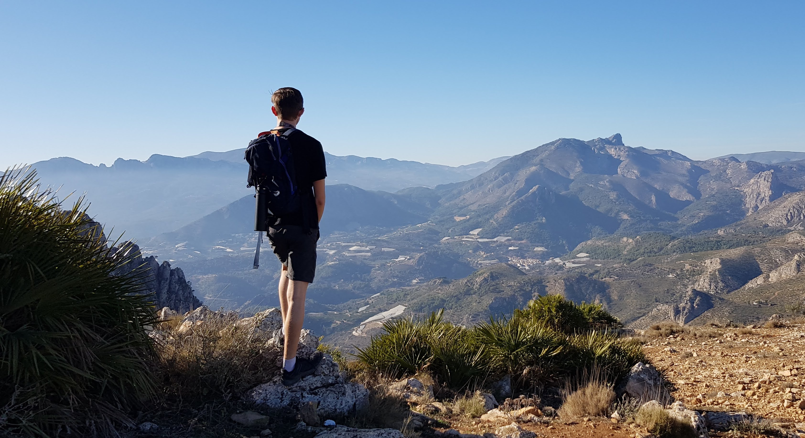

{software developer}
Software Developer in Manchester
I decided to become a programmer because I am inspired by its potential to make people’s lives easier and better.👨🏻💻 I love the creative, problem-solving nature of software engineering and the amazing feeling I get when solving hard problems, especially when working in a team. I trained as a developer on the Northcoders Programming Bootcamp. At Northcoders I developed a front-end project, back-end project and group project utilising JavaScript, Express, Node, PSQL and React.
Previously I worked as a Search Engine Evaluator, where I provided human feedback on the relevancy, accuracy and trustworthiness of pages returned by the world’s largest search engines in order to help improve their algorithms. 🔎
In my spare time I love to travel and learn about other cultures. I have been hiking all over Europe whilst travelling in a self-converted campervan! 🥾 🚐 I fell in love with Spain in particular which inspired me to try and learn Spanish 🇪🇸. I also enjoy making videos for my YouTube channel where I teach English as a second language using the Comprehensible Input method. 📹
Checkout some of my projects!